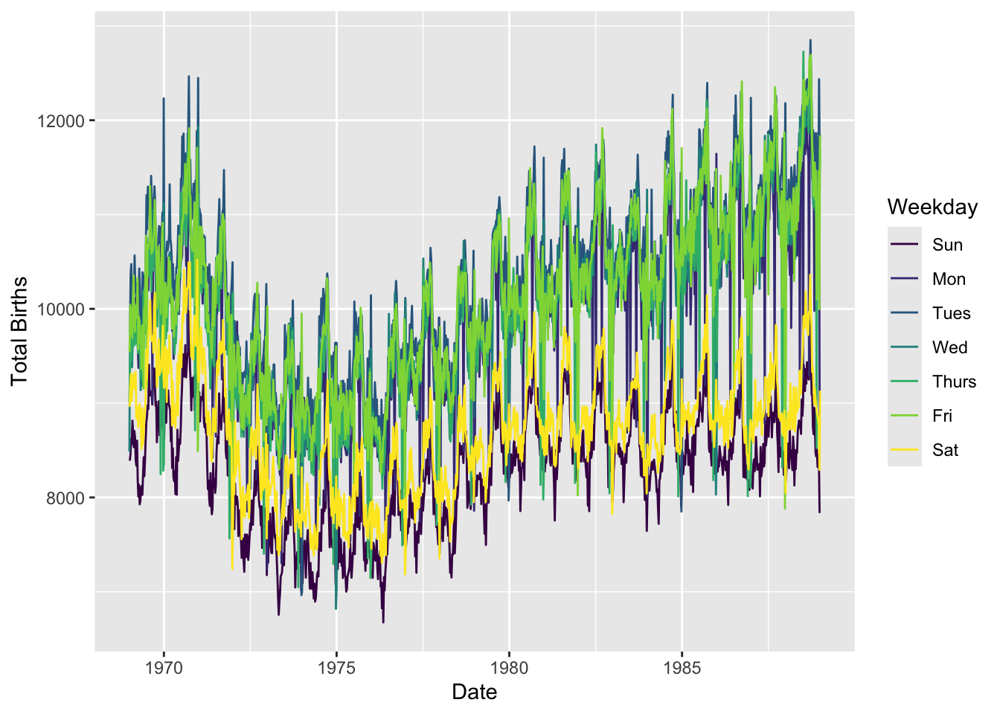
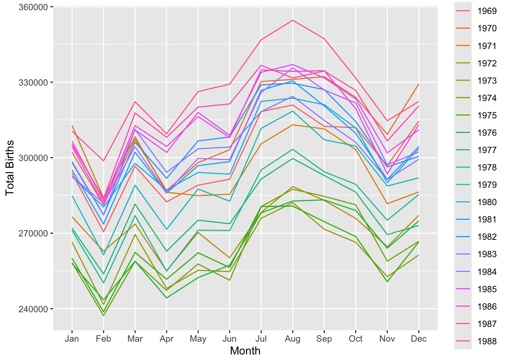
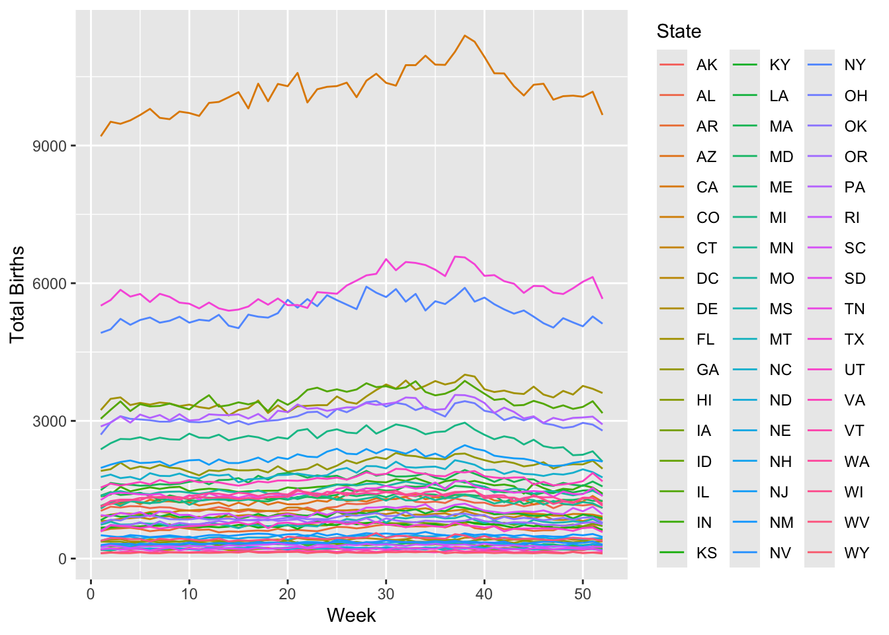
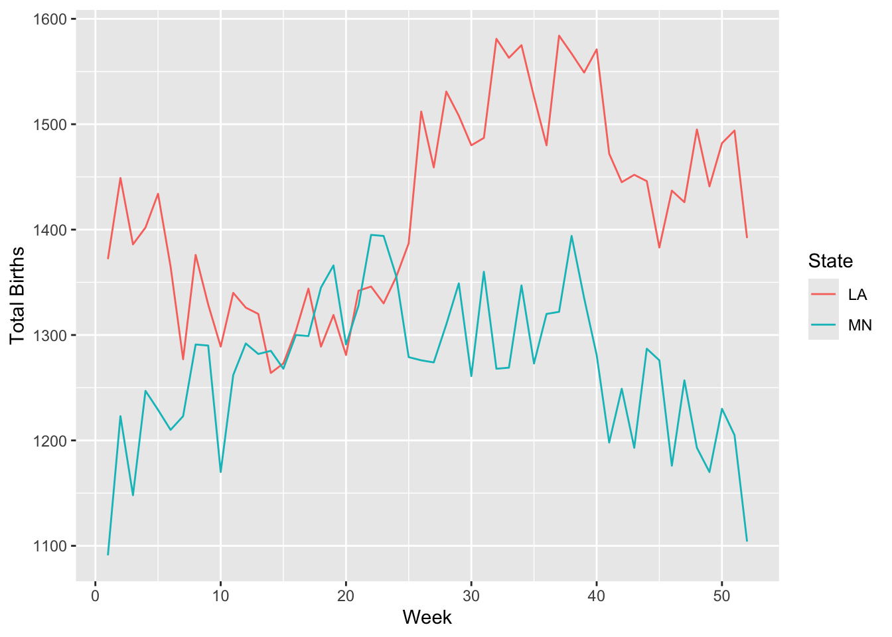

Registered S3 method overwritten by 'mosaic':
method from
fortify.SpatialPolygonsDataFrame ggplot2
The 'mosaic' package masks several functions from core packages in order to add
additional features. The original behavior of these functions should not be affected by this.
Attaching package: 'mosaic'
The following object is masked from 'package:Matrix':
mean
The following objects are masked from 'package:dplyr':
count, do, tally
The following object is masked from 'package:purrr':
cross
The following object is masked from 'package:ggplot2':
stat
The following objects are masked from 'package:stats':
binom.test, cor, cor.test, cov, fivenum, IQR, median, prop.test,
quantile, sd, t.test, var
The following objects are masked from 'package:base':
max, mean, min, prod, range, sample, sum
# Exercise 1a: More Filtering# Keep only Adelie and Chinstrap using %in%penguins %>%filter(species %in%c("Adelie", "Chinstrap")) %>%count(species)
# A tibble: 2 × 2
species n
<fct> <int>
1 Adelie 152
2 Chinstrap 68
# %in% keeps rows where species is one of the two# Keep only Adelie and Chinstrap using !=penguins %>%filter(species !="Gentoo") %>%count(species)
# A tibble: 2 × 2
species n
<fct> <int>
1 Adelie 152
2 Chinstrap 68
# species != "Gentoo" drops Gentoo, leaving the other two# Exercise 1b: Handling NAs# Count how many penguins missing body_mass_gpenguins %>%summarize(missing =sum(is.na(body_mass_g)))
# A tibble: 1 × 1
missing
<int>
1 2
# Remove only those missing body_mass_gpenguins_w_body_mass <- penguins %>%filter(!is.na(body_mass_g))# Remove rows missing *any* variable (use sparingly!)penguins_complete <- penguins %>%na.omit()# na.omit() drops rows with ANY NA; use only when you truly need complete cases# Exercise 2: More Selecting# Keep everything except year and islandpenguins %>%select(-year, -island)
# A tibble: 344 × 6
species bill_length_mm bill_depth_mm flipper_length_mm body_mass_g sex
<fct> <dbl> <dbl> <int> <int> <fct>
1 Adelie 39.1 18.7 181 3750 male
2 Adelie 39.5 17.4 186 3800 female
3 Adelie 40.3 18 195 3250 female
4 Adelie NA NA NA NA <NA>
5 Adelie 36.7 19.3 193 3450 female
6 Adelie 39.3 20.6 190 3650 male
7 Adelie 38.9 17.8 181 3625 female
8 Adelie 39.2 19.6 195 4675 male
9 Adelie 34.1 18.1 193 3475 <NA>
10 Adelie 42 20.2 190 4250 <NA>
# ℹ 334 more rows
# Keep species and all measurements in millimeterspenguins %>%select(species, ends_with("_mm"))
# Count male/female by speciespenguins %>%count(species, sex)
# A tibble: 8 × 3
species sex n
<fct> <fct> <int>
1 Adelie female 73
2 Adelie male 73
3 Adelie <NA> 6
4 Chinstrap female 34
5 Chinstrap male 34
6 Gentoo female 58
7 Gentoo male 61
8 Gentoo <NA> 5
# Average body mass by species and sexpenguins %>%group_by(species, sex) %>%summarize(mean_mass =mean(body_mass_g, na.rm =TRUE))
`summarise()` has grouped output by 'species'. You can override using the
`.groups` argument.
# A tibble: 8 × 3
# Groups: species [3]
species sex mean_mass
<fct> <fct> <dbl>
1 Adelie female 3369.
2 Adelie male 4043.
3 Adelie <NA> 3540
4 Chinstrap female 3527.
5 Chinstrap male 3939.
6 Gentoo female 4680.
7 Gentoo male 5485.
8 Gentoo <NA> 4588.
# Exercise 4: Dates with lubridatetoday <-as.Date(today())class(today) # "Date"
[1] "Date"
year(today) # 2025
[1] 2025
month(today) # 5
[1] 5
month(today, label=TRUE) # "May"
[1] May
12 Levels: Jan < Feb < Mar < Apr < May < Jun < Jul < Aug < Sep < ... < Dec
week(today) # 19 (ISO week)
[1] 19
mday(today) # 7 (day of month)
[1] 13
yday(today) # 127 (day of year)
[1] 133
wday(today) # 4 (1 = Sunday)
[1] 3
wday(today, label=TRUE) # "Wed"
[1] Tue
Levels: Sun < Mon < Tue < Wed < Thu < Fri < Sat
today >=ymd("2024-02-14") # TRUE
[1] TRUE
today <ymd("2024-02-14") # FALSE
[1] FALSE
# Exercise 5: Birthdays datasetdata("Birthdays")# How many days of data per state?Birthdays %>%count(state)
state n
1 AK 7306
2 AL 7312
3 AR 7310
4 AZ 7310
5 CA 7325
6 CO 7305
7 CT 7312
8 DC 7311
9 DE 7307
10 FL 7307
11 GA 7314
12 HI 7306
13 IA 7306
14 ID 7306
15 IL 7314
16 IN 7311
17 KS 7311
18 KY 7313
19 LA 7309
20 MA 7315
21 MD 7311
22 ME 7309
23 MI 7323
24 MN 7315
25 MO 7309
26 MS 7310
27 MT 7305
28 NC 7307
29 ND 7305
30 NE 7305
31 NH 7308
32 NJ 7321
33 NM 7308
34 NV 7307
35 NY 7333
36 OH 7319
37 OK 7306
38 OR 7307
39 PA 7330
40 RI 7305
41 SC 7314
42 SD 7305
43 TN 7308
44 TX 7330
45 UT 7307
46 VA 7310
47 VT 7305
48 WA 7306
49 WI 7311
50 WV 7310
51 WY 7305
# Total births overallBirthdays %>%summarize(total_births =sum(births))
total_births
1 70486538
# Total births per state, sorted low→highBirthdays %>%group_by(state) %>%summarize(total =sum(births)) %>%arrange(total)
# A tibble: 51 × 2
state total
<chr> <int>
1 VT 147886
2 WY 154019
3 AK 185385
4 DE 188705
5 SD 235734
6 ND 238696
7 NV 241470
8 MT 253884
9 NH 264984
10 RI 265038
# ℹ 41 more rows
# Exercise 6: daily_births and plotdaily_births <- Birthdays %>%group_by(date, wday) %>%summarize(total_births =sum(births), .groups ="drop")ggplot(daily_births, aes(x = date, y = total_births, color = wday)) +geom_line() +labs(x ="Date", y ="Total Births", color ="Weekday")

# Exercise 7a: Monthly births over timemonthly_births <- Birthdays %>%mutate(month =month(date, label =TRUE)) %>%group_by(year, month) %>%summarize(births =sum(births), .groups ="drop")ggplot(monthly_births, aes(x = month, y = births, group = year, color =factor(year))) +geom_line() +labs(x ="Month", y ="Total Births", color ="Year")

# Seasonal peaks and troughs emerge, consistent patterns year-to-year.# Exercise 7b: Weekly births in 1988 by state (drop week 53)weekly_1988 <- Birthdays %>%filter(year ==1988) %>%mutate(week =week(date)) %>%filter(week !=53) %>%group_by(state, week) %>%summarize(births =sum(births), .groups ="drop")ggplot(weekly_1988, aes(x = week, y = births, color = state)) +geom_line() +labs(x ="Week", y ="Total Births", color ="State")

# Notice seasonal trends differ by state# Exercise 7c: Compare MN vs LA in 1988mn_la_1988 <- weekly_1988 %>%filter(state %in%c("MN", "LA"))ggplot(mn_la_1988, aes(x = week, y = births, color = state)) +geom_line() +labs(x ="Week", y ="Total Births", color ="State")

# MN and LA show different seasonal patterns reflecting climate differences# Exercise 8: More Practice# a) MA in 1979, sorted by births descendingBirthdays %>%filter(state =="MA", year ==1979) %>%arrange(desc(births))
state year month day date wday births
1 MA 1979 9 28 1979-09-28 Fri 262
2 MA 1979 9 11 1979-09-11 Tues 252
3 MA 1979 12 28 1979-12-28 Fri 249
4 MA 1979 9 26 1979-09-26 Wed 246
5 MA 1979 7 24 1979-07-24 Tues 245
6 MA 1979 4 27 1979-04-27 Fri 243
7 MA 1979 8 6 1979-08-06 Mon 243
8 MA 1979 10 2 1979-10-02 Tues 239
9 MA 1979 6 29 1979-06-29 Fri 238
10 MA 1979 8 23 1979-08-23 Thurs 238
11 MA 1979 2 23 1979-02-23 Fri 237
12 MA 1979 5 1 1979-05-01 Tues 236
13 MA 1979 7 18 1979-07-18 Wed 236
14 MA 1979 8 2 1979-08-02 Thurs 236
15 MA 1979 5 24 1979-05-24 Thurs 235
16 MA 1979 8 1 1979-08-01 Wed 235
17 MA 1979 4 6 1979-04-06 Fri 234
18 MA 1979 8 31 1979-08-31 Fri 234
19 MA 1979 5 10 1979-05-10 Thurs 233
20 MA 1979 8 15 1979-08-15 Wed 233
21 MA 1979 3 23 1979-03-23 Fri 232
22 MA 1979 6 12 1979-06-12 Tues 232
23 MA 1979 7 10 1979-07-10 Tues 232
24 MA 1979 7 25 1979-07-25 Wed 232
25 MA 1979 6 27 1979-06-27 Wed 231
26 MA 1979 7 27 1979-07-27 Fri 231
27 MA 1979 10 5 1979-10-05 Fri 231
28 MA 1979 5 23 1979-05-23 Wed 230
29 MA 1979 9 19 1979-09-19 Wed 229
30 MA 1979 2 16 1979-02-16 Fri 228
31 MA 1979 8 16 1979-08-16 Thurs 228
32 MA 1979 8 24 1979-08-24 Fri 228
33 MA 1979 9 17 1979-09-17 Mon 228
34 MA 1979 4 30 1979-04-30 Mon 227
35 MA 1979 6 26 1979-06-26 Tues 227
36 MA 1979 7 20 1979-07-20 Fri 227
37 MA 1979 8 10 1979-08-10 Fri 227
38 MA 1979 8 14 1979-08-14 Tues 227
39 MA 1979 9 24 1979-09-24 Mon 227
40 MA 1979 3 5 1979-03-05 Mon 226
41 MA 1979 6 21 1979-06-21 Thurs 226
42 MA 1979 2 2 1979-02-02 Fri 225
43 MA 1979 2 27 1979-02-27 Tues 225
44 MA 1979 4 9 1979-04-09 Mon 225
45 MA 1979 5 8 1979-05-08 Tues 225
46 MA 1979 7 17 1979-07-17 Tues 225
47 MA 1979 9 14 1979-09-14 Fri 225
48 MA 1979 9 20 1979-09-20 Thurs 225
49 MA 1979 6 11 1979-06-11 Mon 224
50 MA 1979 11 9 1979-11-09 Fri 224
51 MA 1979 2 14 1979-02-14 Wed 223
52 MA 1979 7 23 1979-07-23 Mon 223
53 MA 1979 8 9 1979-08-09 Thurs 223
54 MA 1979 1 3 1979-01-03 Wed 222
55 MA 1979 1 22 1979-01-22 Mon 222
56 MA 1979 6 19 1979-06-19 Tues 222
57 MA 1979 9 4 1979-09-04 Tues 222
58 MA 1979 9 21 1979-09-21 Fri 222
59 MA 1979 10 23 1979-10-23 Tues 222
60 MA 1979 2 6 1979-02-06 Tues 221
61 MA 1979 3 19 1979-03-19 Mon 221
62 MA 1979 4 25 1979-04-25 Wed 221
63 MA 1979 8 20 1979-08-20 Mon 221
64 MA 1979 9 18 1979-09-18 Tues 221
65 MA 1979 11 6 1979-11-06 Tues 221
66 MA 1979 2 20 1979-02-20 Tues 220
67 MA 1979 4 26 1979-04-26 Thurs 220
68 MA 1979 8 13 1979-08-13 Mon 220
69 MA 1979 8 17 1979-08-17 Fri 220
70 MA 1979 9 10 1979-09-10 Mon 220
71 MA 1979 10 25 1979-10-25 Thurs 220
72 MA 1979 10 26 1979-10-26 Fri 220
73 MA 1979 3 6 1979-03-06 Tues 219
74 MA 1979 6 1 1979-06-01 Fri 219
75 MA 1979 8 29 1979-08-29 Wed 219
76 MA 1979 9 27 1979-09-27 Thurs 219
77 MA 1979 10 1 1979-10-01 Mon 219
78 MA 1979 11 19 1979-11-19 Mon 219
79 MA 1979 4 24 1979-04-24 Tues 218
80 MA 1979 5 21 1979-05-21 Mon 218
81 MA 1979 6 28 1979-06-28 Thurs 218
82 MA 1979 7 9 1979-07-09 Mon 218
83 MA 1979 8 3 1979-08-03 Fri 218
84 MA 1979 9 6 1979-09-06 Thurs 218
85 MA 1979 10 3 1979-10-03 Wed 218
86 MA 1979 6 7 1979-06-07 Thurs 217
87 MA 1979 6 14 1979-06-14 Thurs 217
88 MA 1979 7 3 1979-07-03 Tues 217
89 MA 1979 8 8 1979-08-08 Wed 217
90 MA 1979 10 4 1979-10-04 Thurs 217
91 MA 1979 10 22 1979-10-22 Mon 217
92 MA 1979 10 29 1979-10-29 Mon 217
93 MA 1979 10 9 1979-10-09 Tues 216
94 MA 1979 1 16 1979-01-16 Tues 215
95 MA 1979 3 13 1979-03-13 Tues 215
96 MA 1979 5 4 1979-05-04 Fri 215
97 MA 1979 5 14 1979-05-14 Mon 215
98 MA 1979 6 22 1979-06-22 Fri 215
99 MA 1979 3 30 1979-03-30 Fri 214
100 MA 1979 6 5 1979-06-05 Tues 214
101 MA 1979 12 14 1979-12-14 Fri 214
102 MA 1979 12 27 1979-12-27 Thurs 214
103 MA 1979 3 8 1979-03-08 Thurs 213
104 MA 1979 4 18 1979-04-18 Wed 213
105 MA 1979 8 28 1979-08-28 Tues 213
106 MA 1979 10 12 1979-10-12 Fri 213
107 MA 1979 11 14 1979-11-14 Wed 213
108 MA 1979 12 31 1979-12-31 Mon 213
109 MA 1979 4 23 1979-04-23 Mon 212
110 MA 1979 5 11 1979-05-11 Fri 212
111 MA 1979 5 18 1979-05-18 Fri 212
112 MA 1979 5 30 1979-05-30 Wed 212
113 MA 1979 7 6 1979-07-06 Fri 212
114 MA 1979 7 19 1979-07-19 Thurs 212
115 MA 1979 10 17 1979-10-17 Wed 212
116 MA 1979 10 24 1979-10-24 Wed 212
117 MA 1979 12 11 1979-12-11 Tues 212
118 MA 1979 2 5 1979-02-05 Mon 211
119 MA 1979 3 7 1979-03-07 Wed 211
120 MA 1979 3 29 1979-03-29 Thurs 211
121 MA 1979 9 7 1979-09-07 Fri 211
122 MA 1979 10 30 1979-10-30 Tues 211
123 MA 1979 7 2 1979-07-02 Mon 210
124 MA 1979 1 15 1979-01-15 Mon 209
125 MA 1979 3 26 1979-03-26 Mon 209
126 MA 1979 4 4 1979-04-04 Wed 209
127 MA 1979 7 15 1979-07-15 Sun 209
128 MA 1979 2 8 1979-02-08 Thurs 208
129 MA 1979 4 11 1979-04-11 Wed 208
130 MA 1979 6 6 1979-06-06 Wed 208
131 MA 1979 6 30 1979-06-30 Sat 208
132 MA 1979 7 30 1979-07-30 Mon 208
133 MA 1979 9 29 1979-09-29 Sat 208
134 MA 1979 10 10 1979-10-10 Wed 208
135 MA 1979 2 9 1979-02-09 Fri 207
136 MA 1979 3 9 1979-03-09 Fri 207
137 MA 1979 4 20 1979-04-20 Fri 207
138 MA 1979 6 20 1979-06-20 Wed 207
139 MA 1979 7 26 1979-07-26 Thurs 207
140 MA 1979 8 21 1979-08-21 Tues 207
141 MA 1979 9 25 1979-09-25 Tues 207
142 MA 1979 11 26 1979-11-26 Mon 207
143 MA 1979 1 2 1979-01-02 Tues 206
144 MA 1979 2 22 1979-02-22 Thurs 206
145 MA 1979 7 12 1979-07-12 Thurs 206
146 MA 1979 7 13 1979-07-13 Fri 206
147 MA 1979 9 5 1979-09-05 Wed 206
148 MA 1979 5 25 1979-05-25 Fri 205
149 MA 1979 11 23 1979-11-23 Fri 205
150 MA 1979 11 28 1979-11-28 Wed 205
151 MA 1979 12 4 1979-12-04 Tues 205
152 MA 1979 1 26 1979-01-26 Fri 204
153 MA 1979 3 22 1979-03-22 Thurs 204
154 MA 1979 5 16 1979-05-16 Wed 204
155 MA 1979 10 16 1979-10-16 Tues 204
156 MA 1979 11 16 1979-11-16 Fri 204
157 MA 1979 12 24 1979-12-24 Mon 204
158 MA 1979 3 2 1979-03-02 Fri 203
159 MA 1979 4 3 1979-04-03 Tues 203
160 MA 1979 4 12 1979-04-12 Thurs 203
161 MA 1979 5 3 1979-05-03 Thurs 203
162 MA 1979 10 6 1979-10-06 Sat 203
163 MA 1979 11 1 1979-11-01 Thurs 203
164 MA 1979 11 30 1979-11-30 Fri 203
165 MA 1979 12 10 1979-12-10 Mon 203
166 MA 1979 12 17 1979-12-17 Mon 203
167 MA 1979 6 8 1979-06-08 Fri 202
168 MA 1979 6 15 1979-06-15 Fri 202
169 MA 1979 11 11 1979-11-11 Sun 202
170 MA 1979 1 29 1979-01-29 Mon 201
171 MA 1979 3 21 1979-03-21 Wed 201
172 MA 1979 3 28 1979-03-28 Wed 201
173 MA 1979 4 10 1979-04-10 Tues 201
174 MA 1979 5 2 1979-05-02 Wed 201
175 MA 1979 10 15 1979-10-15 Mon 201
176 MA 1979 11 7 1979-11-07 Wed 201
177 MA 1979 1 18 1979-01-18 Thurs 200
178 MA 1979 4 19 1979-04-19 Thurs 200
179 MA 1979 7 11 1979-07-11 Wed 200
180 MA 1979 7 21 1979-07-21 Sat 200
181 MA 1979 8 5 1979-08-05 Sun 200
182 MA 1979 10 19 1979-10-19 Fri 200
183 MA 1979 11 2 1979-11-02 Fri 200
184 MA 1979 11 15 1979-11-15 Thurs 200
185 MA 1979 11 20 1979-11-20 Tues 200
186 MA 1979 1 11 1979-01-11 Thurs 199
187 MA 1979 2 12 1979-02-12 Mon 199
188 MA 1979 3 14 1979-03-14 Wed 199
189 MA 1979 5 22 1979-05-22 Tues 199
190 MA 1979 2 26 1979-02-26 Mon 198
191 MA 1979 3 15 1979-03-15 Thurs 198
192 MA 1979 6 13 1979-06-13 Wed 198
193 MA 1979 6 18 1979-06-18 Mon 198
194 MA 1979 7 31 1979-07-31 Tues 198
195 MA 1979 8 26 1979-08-26 Sun 198
196 MA 1979 9 13 1979-09-13 Thurs 198
197 MA 1979 11 13 1979-11-13 Tues 198
198 MA 1979 12 7 1979-12-07 Fri 198
199 MA 1979 5 31 1979-05-31 Thurs 197
200 MA 1979 11 27 1979-11-27 Tues 197
201 MA 1979 12 6 1979-12-06 Thurs 197
202 MA 1979 2 21 1979-02-21 Wed 196
203 MA 1979 4 17 1979-04-17 Tues 196
204 MA 1979 4 21 1979-04-21 Sat 196
205 MA 1979 6 25 1979-06-25 Mon 196
206 MA 1979 8 4 1979-08-04 Sat 196
207 MA 1979 8 7 1979-08-07 Tues 196
208 MA 1979 10 8 1979-10-08 Mon 196
209 MA 1979 10 11 1979-10-11 Thurs 196
210 MA 1979 1 13 1979-01-13 Sat 195
211 MA 1979 4 13 1979-04-13 Fri 195
212 MA 1979 1 19 1979-01-19 Fri 194
213 MA 1979 3 16 1979-03-16 Fri 194
214 MA 1979 5 7 1979-05-07 Mon 194
215 MA 1979 9 12 1979-09-12 Wed 194
216 MA 1979 11 5 1979-11-05 Mon 194
217 MA 1979 1 10 1979-01-10 Wed 193
218 MA 1979 1 30 1979-01-30 Tues 193
219 MA 1979 3 11 1979-03-11 Sun 193
220 MA 1979 6 17 1979-06-17 Sun 193
221 MA 1979 8 27 1979-08-27 Mon 193
222 MA 1979 9 9 1979-09-09 Sun 193
223 MA 1979 12 13 1979-12-13 Thurs 193
224 MA 1979 1 5 1979-01-05 Fri 192
225 MA 1979 2 19 1979-02-19 Mon 192
226 MA 1979 3 1 1979-03-01 Thurs 192
227 MA 1979 7 14 1979-07-14 Sat 192
228 MA 1979 11 29 1979-11-29 Thurs 192
229 MA 1979 1 8 1979-01-08 Mon 191
230 MA 1979 1 12 1979-01-12 Fri 191
231 MA 1979 2 15 1979-02-15 Thurs 191
232 MA 1979 3 24 1979-03-24 Sat 191
233 MA 1979 10 28 1979-10-28 Sun 191
234 MA 1979 4 2 1979-04-02 Mon 190
235 MA 1979 5 27 1979-05-27 Sun 190
236 MA 1979 12 3 1979-12-03 Mon 190
237 MA 1979 12 12 1979-12-12 Wed 190
238 MA 1979 4 1 1979-04-01 Sun 189
239 MA 1979 4 5 1979-04-05 Thurs 189
240 MA 1979 8 22 1979-08-22 Wed 189
241 MA 1979 12 26 1979-12-26 Wed 189
242 MA 1979 1 24 1979-01-24 Wed 188
243 MA 1979 7 16 1979-07-16 Mon 188
244 MA 1979 11 21 1979-11-21 Wed 188
245 MA 1979 4 16 1979-04-16 Mon 187
246 MA 1979 6 10 1979-06-10 Sun 187
247 MA 1979 8 11 1979-08-11 Sat 187
248 MA 1979 2 7 1979-02-07 Wed 186
249 MA 1979 3 17 1979-03-17 Sat 186
250 MA 1979 3 27 1979-03-27 Tues 186
251 MA 1979 4 7 1979-04-07 Sat 186
252 MA 1979 5 9 1979-05-09 Wed 186
253 MA 1979 5 15 1979-05-15 Tues 186
254 MA 1979 5 17 1979-05-17 Thurs 186
255 MA 1979 7 7 1979-07-07 Sat 186
256 MA 1979 9 15 1979-09-15 Sat 186
257 MA 1979 10 7 1979-10-07 Sun 186
258 MA 1979 3 12 1979-03-12 Mon 185
259 MA 1979 3 20 1979-03-20 Tues 185
260 MA 1979 12 5 1979-12-05 Wed 185
261 MA 1979 1 4 1979-01-04 Thurs 184
262 MA 1979 2 1 1979-02-01 Thurs 184
263 MA 1979 5 29 1979-05-29 Tues 184
264 MA 1979 9 3 1979-09-03 Mon 184
265 MA 1979 11 8 1979-11-08 Thurs 184
266 MA 1979 12 19 1979-12-19 Wed 184
267 MA 1979 12 21 1979-12-21 Fri 184
268 MA 1979 1 23 1979-01-23 Tues 183
269 MA 1979 4 28 1979-04-28 Sat 183
270 MA 1979 6 24 1979-06-24 Sun 183
271 MA 1979 7 28 1979-07-28 Sat 183
272 MA 1979 7 29 1979-07-29 Sun 183
273 MA 1979 8 19 1979-08-19 Sun 183
274 MA 1979 10 21 1979-10-21 Sun 183
275 MA 1979 10 18 1979-10-18 Thurs 182
276 MA 1979 1 9 1979-01-09 Tues 180
277 MA 1979 2 11 1979-02-11 Sun 180
278 MA 1979 5 19 1979-05-19 Sat 180
279 MA 1979 5 28 1979-05-28 Mon 180
280 MA 1979 6 3 1979-06-03 Sun 180
281 MA 1979 10 20 1979-10-20 Sat 180
282 MA 1979 10 31 1979-10-31 Wed 180
283 MA 1979 12 18 1979-12-18 Tues 180
284 MA 1979 1 31 1979-01-31 Wed 179
285 MA 1979 3 10 1979-03-10 Sat 179
286 MA 1979 4 29 1979-04-29 Sun 179
287 MA 1979 7 5 1979-07-05 Thurs 179
288 MA 1979 8 30 1979-08-30 Thurs 179
289 MA 1979 1 25 1979-01-25 Thurs 178
290 MA 1979 5 26 1979-05-26 Sat 178
291 MA 1979 10 14 1979-10-14 Sun 178
292 MA 1979 2 28 1979-02-28 Wed 177
293 MA 1979 7 8 1979-07-08 Sun 177
294 MA 1979 2 25 1979-02-25 Sun 176
295 MA 1979 4 15 1979-04-15 Sun 176
296 MA 1979 9 22 1979-09-22 Sat 176
297 MA 1979 6 23 1979-06-23 Sat 175
298 MA 1979 7 22 1979-07-22 Sun 175
299 MA 1979 10 27 1979-10-27 Sat 175
300 MA 1979 2 10 1979-02-10 Sat 174
301 MA 1979 8 25 1979-08-25 Sat 174
302 MA 1979 9 16 1979-09-16 Sun 174
303 MA 1979 11 12 1979-11-12 Mon 174
304 MA 1979 11 17 1979-11-17 Sat 174
305 MA 1979 6 2 1979-06-02 Sat 173
306 MA 1979 7 1 1979-07-01 Sun 173
307 MA 1979 10 13 1979-10-13 Sat 173
308 MA 1979 3 25 1979-03-25 Sun 172
309 MA 1979 6 16 1979-06-16 Sat 172
310 MA 1979 11 10 1979-11-10 Sat 172
311 MA 1979 2 13 1979-02-13 Tues 171
312 MA 1979 3 31 1979-03-31 Sat 171
313 MA 1979 6 9 1979-06-09 Sat 171
314 MA 1979 11 25 1979-11-25 Sun 171
315 MA 1979 12 22 1979-12-22 Sat 171
316 MA 1979 5 6 1979-05-06 Sun 170
317 MA 1979 9 2 1979-09-02 Sun 170
318 MA 1979 1 6 1979-01-06 Sat 169
319 MA 1979 8 12 1979-08-12 Sun 169
320 MA 1979 9 8 1979-09-08 Sat 169
321 MA 1979 11 3 1979-11-03 Sat 169
322 MA 1979 12 15 1979-12-15 Sat 169
323 MA 1979 2 18 1979-02-18 Sun 168
324 MA 1979 9 1 1979-09-01 Sat 168
325 MA 1979 11 18 1979-11-18 Sun 166
326 MA 1979 12 1 1979-12-01 Sat 166
327 MA 1979 2 24 1979-02-24 Sat 165
328 MA 1979 4 22 1979-04-22 Sun 165
329 MA 1979 4 14 1979-04-14 Sat 164
330 MA 1979 7 4 1979-07-04 Wed 164
331 MA 1979 9 23 1979-09-23 Sun 164
332 MA 1979 12 2 1979-12-02 Sun 164
333 MA 1979 6 4 1979-06-04 Mon 163
334 MA 1979 12 16 1979-12-16 Sun 163
335 MA 1979 1 21 1979-01-21 Sun 162
336 MA 1979 1 27 1979-01-27 Sat 162
337 MA 1979 5 12 1979-05-12 Sat 162
338 MA 1979 9 30 1979-09-30 Sun 162
339 MA 1979 12 29 1979-12-29 Sat 161
340 MA 1979 12 23 1979-12-23 Sun 160
341 MA 1979 2 3 1979-02-03 Sat 159
342 MA 1979 8 18 1979-08-18 Sat 159
343 MA 1979 1 20 1979-01-20 Sat 158
344 MA 1979 2 17 1979-02-17 Sat 156
345 MA 1979 3 3 1979-03-03 Sat 156
346 MA 1979 3 4 1979-03-04 Sun 156
347 MA 1979 11 24 1979-11-24 Sat 156
348 MA 1979 12 9 1979-12-09 Sun 156
349 MA 1979 1 7 1979-01-07 Sun 155
350 MA 1979 1 14 1979-01-14 Sun 155
351 MA 1979 1 17 1979-01-17 Wed 155
352 MA 1979 4 8 1979-04-08 Sun 155
353 MA 1979 11 4 1979-11-04 Sun 155
354 MA 1979 12 20 1979-12-20 Thurs 154
355 MA 1979 2 4 1979-02-04 Sun 153
356 MA 1979 5 20 1979-05-20 Sun 153
357 MA 1979 3 18 1979-03-18 Sun 152
358 MA 1979 12 30 1979-12-30 Sun 152
359 MA 1979 12 8 1979-12-08 Sat 151
360 MA 1979 12 25 1979-12-25 Tues 150
361 MA 1979 5 5 1979-05-05 Sat 148
362 MA 1979 11 22 1979-11-22 Thurs 147
363 MA 1979 1 28 1979-01-28 Sun 146
364 MA 1979 1 1 1979-01-01 Mon 144
365 MA 1979 5 13 1979-05-13 Sun 143
# b) Top 5 states by total births from 1979-09-09 to 1979-09-12Birthdays %>%filter(date >=ymd("1979-09-09"), date <=ymd("1979-09-12")) %>%group_by(state) %>%summarize(total =sum(births), .groups ="drop") %>%arrange(desc(total)) %>%head(5)
# A tibble: 5 × 2
state total
<chr> <int>
1 CA 4422
2 TX 3151
3 NY 2621
4 IL 2235
5 OH 1938
Source Code
---title: "Dates"---```{r}library(tidyverse)library(palmerpenguins)library(lubridate)library(mosaic)``````{r}# Exercise 1a: More Filtering# Keep only Adelie and Chinstrap using %in%penguins %>%filter(species %in%c("Adelie", "Chinstrap")) %>%count(species)# %in% keeps rows where species is one of the two# Keep only Adelie and Chinstrap using !=penguins %>%filter(species !="Gentoo") %>%count(species)# species != "Gentoo" drops Gentoo, leaving the other two# Exercise 1b: Handling NAs# Count how many penguins missing body_mass_gpenguins %>%summarize(missing =sum(is.na(body_mass_g)))# Remove only those missing body_mass_gpenguins_w_body_mass <- penguins %>%filter(!is.na(body_mass_g))# Remove rows missing *any* variable (use sparingly!)penguins_complete <- penguins %>%na.omit()# na.omit() drops rows with ANY NA; use only when you truly need complete cases# Exercise 2: More Selecting# Keep everything except year and islandpenguins %>%select(-year, -island)# Keep species and all measurements in millimeterspenguins %>%select(species, ends_with("_mm"))# Keep species and all bill-related measurementspenguins %>%select(species, starts_with("bill"))# Keep species and all length-related measurementspenguins %>%select(species, contains("length"))# Exercise 3: Arranging, Counting, Grouping by Multiple# Sort by species then islandpenguins %>%arrange(species, island)# Count male/female by speciespenguins %>%count(species, sex)# Average body mass by species and sexpenguins %>%group_by(species, sex) %>%summarize(mean_mass =mean(body_mass_g, na.rm =TRUE))# Exercise 4: Dates with lubridatetoday <-as.Date(today())class(today) # "Date"year(today) # 2025month(today) # 5month(today, label=TRUE) # "May"week(today) # 19 (ISO week)mday(today) # 7 (day of month)yday(today) # 127 (day of year)wday(today) # 4 (1 = Sunday)wday(today, label=TRUE) # "Wed"today >=ymd("2024-02-14") # TRUEtoday <ymd("2024-02-14") # FALSE# Exercise 5: Birthdays datasetdata("Birthdays")# How many days of data per state?Birthdays %>%count(state)# Total births overallBirthdays %>%summarize(total_births =sum(births))# Total births per state, sorted low→highBirthdays %>%group_by(state) %>%summarize(total =sum(births)) %>%arrange(total)# Exercise 6: daily_births and plotdaily_births <- Birthdays %>%group_by(date, wday) %>%summarize(total_births =sum(births), .groups ="drop")ggplot(daily_births, aes(x = date, y = total_births, color = wday)) +geom_line() +labs(x ="Date", y ="Total Births", color ="Weekday")# Exercise 7a: Monthly births over timemonthly_births <- Birthdays %>%mutate(month =month(date, label =TRUE)) %>%group_by(year, month) %>%summarize(births =sum(births), .groups ="drop")ggplot(monthly_births, aes(x = month, y = births, group = year, color =factor(year))) +geom_line() +labs(x ="Month", y ="Total Births", color ="Year")# Seasonal peaks and troughs emerge, consistent patterns year-to-year.# Exercise 7b: Weekly births in 1988 by state (drop week 53)weekly_1988 <- Birthdays %>%filter(year ==1988) %>%mutate(week =week(date)) %>%filter(week !=53) %>%group_by(state, week) %>%summarize(births =sum(births), .groups ="drop")ggplot(weekly_1988, aes(x = week, y = births, color = state)) +geom_line() +labs(x ="Week", y ="Total Births", color ="State")# Notice seasonal trends differ by state# Exercise 7c: Compare MN vs LA in 1988mn_la_1988 <- weekly_1988 %>%filter(state %in%c("MN", "LA"))ggplot(mn_la_1988, aes(x = week, y = births, color = state)) +geom_line() +labs(x ="Week", y ="Total Births", color ="State")# MN and LA show different seasonal patterns reflecting climate differences# Exercise 8: More Practice# a) MA in 1979, sorted by births descendingBirthdays %>%filter(state =="MA", year ==1979) %>%arrange(desc(births))# b) Top 5 states by total births from 1979-09-09 to 1979-09-12Birthdays %>%filter(date >=ymd("1979-09-09"), date <=ymd("1979-09-12")) %>%group_by(state) %>%summarize(total =sum(births), .groups ="drop") %>%arrange(desc(total)) %>%head(5)```